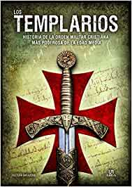
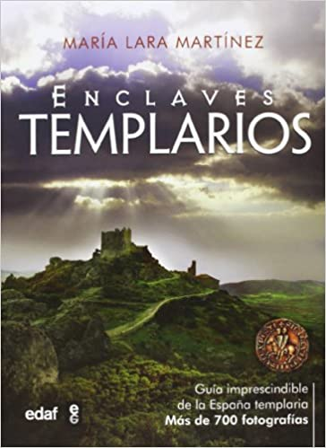
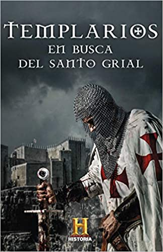
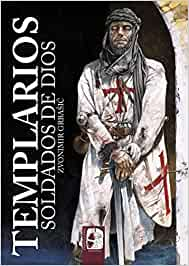

Del origen de las cruzadas al final de la Orden del Temple. Todo sobre la orden religiosa y militar más famosa de la historia. Autor: Canal Historia.
9,45 € (IVA 21% incluido)

Los Templarios
Historia de la orden militar cristiana más poderosa de la Edad.Autora: Pastora Barahona
10,40 € (IVA 21% incluido)
Los Origenes Templarios
Los Templarios, soldados de Dios, paladines de la Cristiandad, ¿Cómo vivían su fé?. ¿Cómo entendían la Palabra de Dios?. ¿Cuál es su misión hoy en día?. Autor: Jose Miguel Nicolau
18,19 € (IVA 21% incluido)

Enclaves Templarios
Guía definitiva e imprescindible de la España Templaria con más de 700 fotografías a todo color. Autora: María Lara Martínez
22,80 € (IVA 21% incluido)
<

En busca del Santo Grial
¿Existió realmente el cáliz sagrado de la última Cena? ¿Cómo se fundó la Orden? ¿Cuáles fueron las reliquias templarias más importantes?. Autor: Canal Historia
9,12€ (IVA 21% incluido)

Templarios: Soldados de Dios
Historia de la Orden del Temple, desde los días previos a la I Cruzada hasta su disolución, su faceta militar, organización, funcionamiento o mentalidad. Autor: Zvonimir Grbašić